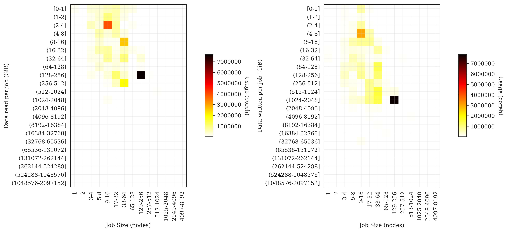

I/O usage on ARCHER
Andy Turner, EPCC
a.turner@epcc.ed.ac.uk

Slide content is available under under a Creative Commons Attribution-NonCommercial-ShareAlike 4.0 International License.
This means you are free to copy and redistribute the material and adapt
and build on the material under the following terms: You must give appropriate credit, provide
a link to the license and indicate if changes were made. If you adapt or build on the material
you must distribute your work under the same license as the original.
Note that this presentation contains images owned by others. Please seek their permission
before reusing these images.
Built using reveal.js
reveal.js is available under the MIT licence
Acknowledgements
- EPCC: Dominic Sloan-Murphy, David Henty, Alan Simpson
- Cray: Karthee Sivalingam, Harvey Richardson
- University of Reading: Julian Kunkel
- ARCHER Funding: EPSRC and NERC
Overview
Motivation
Users
High-level IO metrics on a per-job basis
- Better understanding of the different IO requirements of different jobs
- Help identify any issues or performance bottlenecks
- More effectively plan their research workflow
Service
High-level IO mertics assessed statistically across the service
- Overall view of IO usage of the service
- Better understanding of IO requirements of different user groups
- Assist IO resource planning and setup
- Trend analysis and design of future services
Requirements
IO Metrics
- High-level read and write data on a per job basis: data and ops
- Routinely collected with no intervention from user
- No or little impact on job performance
- Ability to examine particular jobs in more detail if required
Cray LASSi tool meets these requirements (see talk from Karthee later today)
Reporting and Anaysis
- Provide reporting interface to users to inspect IO metrics
- Link per-job IO data to metadata (research area, application, etc.)
- Ability to perform statistical analyses across different periods and classifiers
- Flexibility to provide different analyses as requirements evolve
EPCC SAFE meets these requirements
Combining LASSi and SAFE
- SAFE designed to take many different data feeds: LASSi feed configured
- Import historical LASSi data and setup regular feed from LASSi
- Link LASSi data to other sources (ALPS, PBS, project/user management)
- Write reports to analyse overall use by different classifiers
Results

Notes
- Analysis period: July - December 2018
- All jobs that ran for more than 5 minutes included
- LASSi samples IO from all jobs once every 3 minutes
- Only covers accesses to Lustre file system
- Only data amounts/rates reported - analysis of I/O ops to follow
- Research areas identified by project membership
- Initial analysis - lots still to do!
Overall Read Rates
Overall Write Rates
Overall Write Rates (zoomed)
Overall I/O distribution (by data)
Overall I/O distribution (by rate)
I/O distribution: Materials Science
I/O distribution: Climate Modelling

I/O distribution: Ocean Modelling
I/O distribution: CFD
I/O distribution: Biomolecular Modelling
Overall I/O distribution (by data)
Overview
- Three broad patterns of workflow observed:
- Read small, write small: seen for materials science research
- Read small, write medium: seen for biomolecular modelling
- Read large, write large: seen for grid-based modelling (CFD, climate/ocean modelling)
- Climate/ocean pattern more tightly constrained than CFD, potentially due to more limited length and time scales
Next Steps
- Look at IO operations (in addition to data read/write)
- Analysis by application
- Produce standard reports for users to examine their own IO
- Feedback IO analysis to service management
Summary
- Combination of LASSi and SAFE provides a powerful tool for analysing IO use on national HPC service
- Initial analysis has identified a small number of IO workflow patterns that dominate the use of the service
- Mean rates and total data metrics are strongly correlated due to consistent length of jobs
- Lots of work still to do!